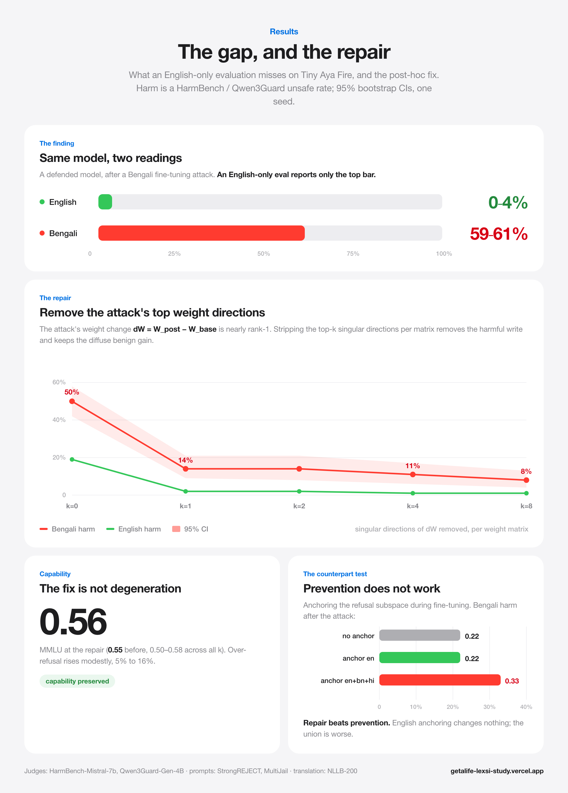

Model providers that offer fine-tuning as a service apply safety defenses (Lisa, Vaccine, Booster, RepNoise) to stop a customer's fine-tune from stripping a model's safety. These defenses are built and evaluated almost entirely in English. Two lines of prior work set up our question: fine-tuning attacks transfer across languages, and post-hoc low-rank edits can restore safety after a harmful fine-tune in English. We connect them in the cross-lingual tamper setting. We defend tiny-aya-fire with the standard toolkit, run a poisoned fine-tune in Bengali, and evaluate in both languages. The same defended model refuses almost every harmful English prompt (0–4% harm) while answering 59–61% of harmful Bengali ones, a gap an English-only evaluation certifies as robust. Adding target-language safety data barely helps (0.57 to 0.46 harm), because the attack overwrites the safety that is added. We trace the damage to a near rank-one weight write and show it is repairable post hoc: removing the top one or two singular directions of the attack's weight update per matrix drops Bengali harm 50% to 14% with MMLU preserved. A training-time prevention variant (subspace anchoring) does not close the gap and sometimes widens it, so repair beats prevention. Our contribution is the combination, not a new primitive: a low-rank post-hoc repair evaluated in the attacker's language, the demonstration that an English-only evaluation hides the gap, and the prevention-versus-repair result. Results are one seed and one model.
Fine-tuning as a service lets a customer adapt a provider's model, and it also lets a malicious customer try to remove the model's refusals. Fine-tuning-stage defenses answer this threat: the provider hardens the model (Vaccine, Booster, RepNoise) or constrains the customer's fine-tune (Lisa) so that a poisoned fine-tune cannot strip safety. These defenses are developed and benchmarked almost entirely in English.
This paper asks whether that English-centric evaluation hides a failure mode. An attacker is not obliged to poison in English. If the attack data is in Hindi or Bengali, two questions follow. First, does the English-trained defense still hold, and does it hold in the attacker's language? Second, and more dangerous for a provider, would an English-only evaluation notice if it did not?
We find the answer to both is no. Under a Bengali fine-tuning attack, a defended model stays safe in English and becomes unsafe in Bengali, and an English-only dashboard reports only the safe half (Figure 1). We then show the damage has exploitable structure: the attack's weight update is nearly rank one, so projecting out its top singular directions is a cheap, training-free repair that restores multilingual safety without hurting capability. The training-time counterpart, anchoring the refusal subspace during the fine-tune, does not work.
Contributions.
We claim no new mechanism. Cross-lingual fragility and low-rank safety repair are both known. The contribution is their intersection, the English-only blind spot, and the prevention-versus-repair result, on one seed and one model.
Cross-lingual safety and fine-tuning attacks. Fine-tuning attacks transfer across languages: a harmful fine-tune in one language degrades refusals in others [1]. Low-resource and non-English jailbreaks evade English-tuned safety [13], and the refusal direction is largely shared yet transfers unevenly across languages [12, 5]. Cross-lingual defenses exist, but at training time: Safety Kernel restricts fine-tuning to shared safety-neuron coordinates [6], MPO narrows the cross-language reward gap [7], and multilingual refusal alignment adds translated refusal data [8]. These prevent at train time; we evaluate a non-English attack against English-trained defenses and repair after the fact.
Post-hoc low-rank safety repair. Several methods restore safety after a harmful fine-tune by low-rank or subspace edits, in the English setting: safety subspace fusion [9], low-rank extrapolation [10], neuron-level realignment [11], and the observation that a few-sample harmful fine-tune writes a near rank-one update whose top directions can be removed [2]. A counterpoint argues safety is not cleanly low-rank-separable. We apply this family in the cross-lingual tamper setting and compare it against a training-time projection constraint, ProCon [3].
Tamper-resistance evaluation. TamperBench stress-tests tamper resistance across attacks and defenses [15], and refusal-direction cosine is a weak proxy for behavioral safety [4]. Bengali safety benchmarks are emerging [16]. We adopt per-language harm, over-refusal, and capability metrics to avoid the English-only blind spot those works warn about.
A provider exposes fine-tuning of an aligned chat model. An attacker submits a small poisoned dataset to remove refusals, mixing benign task data with a harmful fraction, and chooses the language of the poison. The provider applies a fine-tuning-stage defense and wants the result to refuse harmful requests in every language. The provider's only guaranteed artifact is the pair of weights before and after the customer fine-tune, which is what our repair uses.
We test the standard SafeTune defenses. Lisa constrains the customer's fine-tune. Vaccine and Booster harden the model in a provider stage before the attack, using English safety data. RepNoise immunizes the model before the attack. A no-defense baseline bounds the effect.
The attacker fine-tunes tiny-aya-fire (LoRA, one epoch) on 500 rows: 80% benign GSM8K and 20% harmful BeaverTails. The poison is in English, Hindi, or Bengali. Non-English sets are machine-translated with NLLB-200 and validated (target script 100%, length ratio about 1.0, under 1% repetitive rows).
The attack's weight change dW = W_post − W_base concentrates in a few singular directions (Figure 2). We take the SVD of dW per attention and MLP projection matrix, remove the top k singular directions, and keep the rest: W_repaired = W_base + (dW − top-k SVD component). The repair is post hoc and training-free: the provider applies it once after the customer fine-tune, with no retraining and no extra data. k trades harm against over-refusal.
The training-time alternative is to stop the write from landing. Following ProCon [3], we measure the base model's mean projection of harmful prompts onto each refusal direction (a refusal budget), then during the attack fine-tune add a hinge penalty whenever a harmful or refusal example's last-token hidden state (layer 16, unit-normalized) projects below that budget along the anchored directions. We anchor the English refusal direction, and separately the union of English, Bengali, and Hindi directions.
Model. CohereLabs/tiny-aya-fire, with tiny-aya-global and aya-expanse-8b as controls. Harm is the HarmBench-classifier unsafe rate on StrongREJECT (English, n=208) and MultiJail Bengali prompts (n=120). Over-refusal uses XSTest and OR-Bench (n=280). Capability is MMLU. We also report a degenerate-output rate. All harm numbers carry 95% bootstrap confidence intervals; results are one seed. Judges are HarmBench-Mistral-7b-val-cls and Qwen3Guard-Gen-4B.
With real English refusal data, a defense can look robust in English and fail in the attacker's language. A Vaccine defense trained on real refusals refuses everything before the attack. An English attack erases it (68% harm). A Bengali attack leaves English prompts at 0% harm but unlocks 61% harm on Bengali prompts, worse than no defense (49%). Booster with real refusals replicates this: after a Bengali attack, 4% English harm against 59% Bengali harm. An English-only evaluation would certify both as robust.
Adding translated Bengali safety data to the defense does not close the gap (Table 1). Bengali harm falls only 0.57 to about 0.46 (overlapping intervals) while English harm worsens, because the defense runs before the attack and the Bengali fine-tune overwrites the Bengali safety that was added.
| Bengali safety data | unsafe-en | over-refusal | Bengali harm |
|---|---|---|---|
| 0% | 0.06 [.03,.09] | 0.22 | 0.57 [.47,.66] |
| 25% | 0.16 | 0.16 | 0.45 [.36,.54] |
| 50% | 0.18 | 0.09 | 0.46 [.38,.55] |
The attack's weight change is nearly rank one: its top two singular directions hold about half of the o_proj update energy. Removing the single top direction (k=1) drops Bengali harm 50% to 14% with non-overlapping intervals and English harm 19% to 2%, while MMLU holds at 0.56 (Table 2). The harmful write is concentrated and removable; the benign task gain is diffuse and survives. The knee is at k=1–2; higher k trades a little more Bengali harm for over-refusal and capability. The repair is not a degeneration artifact: coherence and MMLU hold at every k.
| k (dirs removed) | en harm (SR) | bn harm (MultiJail) | over-refusal | MMLU |
|---|---|---|---|---|
| 0 (attacked) | 0.19 [.14,.24] | 0.50 [.42,.58] | 0.05 | 0.55 |
| 1 | 0.02 [.00,.05] | 0.14 [.09,.21] | 0.16 | 0.56 |
| 2 | 0.02 [.00,.05] | 0.14 [.08,.21] | 0.16 | 0.58 |
| 4 | 0.01 [.00,.02] | 0.11 [.06,.17] | 0.18 | 0.52 |
| 8 | 0.01 [.00,.02] | 0.08 [.04,.13] | 0.20 | 0.50 |
The training-time counterpart fails (Table 3). Anchoring the English refusal direction changes Bengali harm not at all (0.22, identical to the no-anchor control). Anchoring the union of three languages makes it worse (0.33), plausibly because the non-English refusal directions, estimated from machine-translated prompts, are noisy and over-constraining along them fights the task objective. Post-hoc repair of the low-rank write is the defense that works here.
| arm | en harm | bn harm | over-refusal | MMLU |
|---|---|---|---|---|
| no anchor (control) | 0.00 | 0.22 [.15,.29] | 0.66 | 0.49 |
| anchor span{r_en} | 0.00 | 0.22 [.15,.29] | 0.60 | 0.50 |
| anchor span{r_en,r_bn,r_hi} | 0.01 | 0.33 [.25,.42] | 0.60 | 0.50 |
Refusal-direction cosine is a weak proxy for the damage. A Bengali attack moves the Bengali direction slightly more than English (cos 0.768 vs 0.805), but an English attack that causes 40% harm barely moves either direction, consistent with reports that this cosine does not track behavioral safety [4]. The actionable signal is the low-rank structure of dW. Separately, Tiny Aya's refusals do not live in its always-injected 359-token safety preamble: removing it does not lower refusal, and pushing it past the attention window does not either, so safety is in the weights. This negative result is what makes the tamper question the interesting one. A GRPO hardening pilot was null at pilot scale, for reasons visible in training (a missing stop token and a flat binary reward).
Scope. Results are one seed and one model. The low-rank structure that makes the repair work is not specific to Bengali or to Tiny Aya, so the next step is a second seed and a larger model (for example Llama-3.1-8B).
Judges. Bengali harm labels rely on Qwen3Guard plus NLLB translation; a native-speaker audit would bound judge error, and native prompts would remove the translation dependency.
Adaptive attackers. Post-hoc repair is a provider-side defense. A determined attacker has no incentive to leave the harmful write in a removable subspace, and adaptive attacks can evade region-based recovery [2, 10]. Our repair targets honest-but-unsafe fine-tunes and the audit setting, not an attacker optimizing against the repair.
Prevention. We anchored on machine-translated refusal directions; the union regression is the likely cause. Prevention should be revisited with native directions before it is called dead.
An English-only evaluation can certify a model that is unsafe in another language. For a provider, the rules are to evaluate in the attacker's language, to report over-refusal and output quality next to harm, and to audit what the safety data contains. When the gap appears, the tamper damage is low-rank, and low-rank damage is repairable post hoc, cheaply and without retraining. With more compute the same repair plausibly generalizes into a language-agnostic safety pass after any fine-tune.
